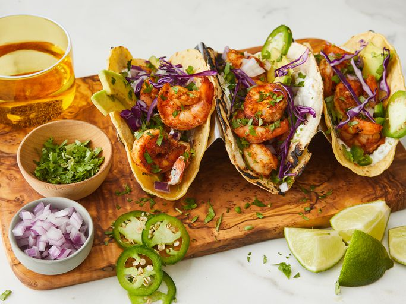

Shrimp Tacos

A delicious seasonal treat the whole family can enjoy.
Ingredients
- 2 pounds large frozen peeled and deveined shrimp, thawed
- 11/2 teaspoons chilli powder
- 1 teaspoon freshly minced garlic
- ½ teaspoon paprika
- ½ teaspoon ground cumin
- ½ teaspoon salt
- ½ teaspoon ground black pepper
- ¼ teaspoon ground coriander
- ¼ teaspoon grate Valenica orange zest
- 2 tablespoons olive oil, or more as needed
- 2 tablespoons sour cream
- 1 lime, zested and juiced
- 1 teaspoon chopped fresh cilantro
- ¼ teaspoon garlic powder
- 1 pinch salt and gorund black pepper
- 20 (6 inch) corn tortillas
- 2 avocados, thinly sliced, or to taste
- 1 red onion, finely diced, or to taste
- ½ bunch fresh cilantro, chopped, or to taste
- 1 jalapeño pepper, diced, or to taste (Optional)
- 2 limes, cut into wedges, or as needed
Steps
- Rinse defrosted shrimp under cold water, drain, and pat dry.
- Combine shrimp, chilli powder, garlic, paprika, cumin, onion powder,
½ teaspoon salt, ½ teaspoon black pepper, coriander, and
orange zest in a bowl. Mix well.
- Heat olive oil in nonstick frying pan over medium-high heat. Add
shrimp and cook until bright pink on the outside and the meat is opaque,
4 to 5 minutes on each side, depending on the size of the srhimp.
- While shrimp cooks, prepare crema by whisking together sour cream, zest
and juice of 1 lime, 1 teaspoon cilantro, garlic powder, and 1 pinch each
of salt and black pepper.
- Heat corn tortillas in either a pan or on a griddle over low heat, 1 to 2
minutes per side. Be careful not to let them burn. Set aside.
- Assemble tacos by spreading 1 teaspoon crema across each tortilla, adding
3 or 4 shrimp, 2 slices of avocado, a sprinkle of fresh red onion, cilantro,
and jalapeño. Serve with sliced limes to squeeze on top and extra crema on the side.
Home